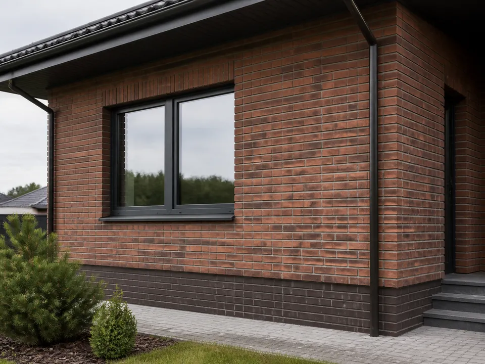

Pagrindo įvertinimas
Patikrinamas tvirtumas, lygumas, drėgmė ir pasirinktos sistemos suderinamumas su pagrindu.
Atliekama fasadų, cokolio, tvorų ir židinių apdaila klinkerio plytelėmis. Įvertinamas pagrindas, suplanuojamas raštas, kampai ir drėgmei atsparios siūlės.

Patikrinamas tvirtumas, lygumas, drėgmė ir pasirinktos sistemos suderinamumas su pagrindu.
Suderinamos eilės, angokraščiai, kampai ir vertikalios siūlės, kad fasadas atrodytų vientisas.
Naudojamos lauko sąlygoms bei pasirinktam klinkeriui tinkamos medžiagos ir technologija.
Siūlės užpildomos bei formuojamos, prireikus parenkama papildoma paviršiaus apsauga.
Pagrindinės vietovės – Pabradė, Švenčionys, Švenčionėliai ir Švenčionių rajonas.
Išsamiau apie pagrindo paruošimą, siūles ir dažnas klaidas skaitykite straipsnyje „Klinkerio fasado ir cokolio apdaila“.
Atsiųskite objekto nuotraukas, plotą ir pasirinkto klinkerio nuorodą.